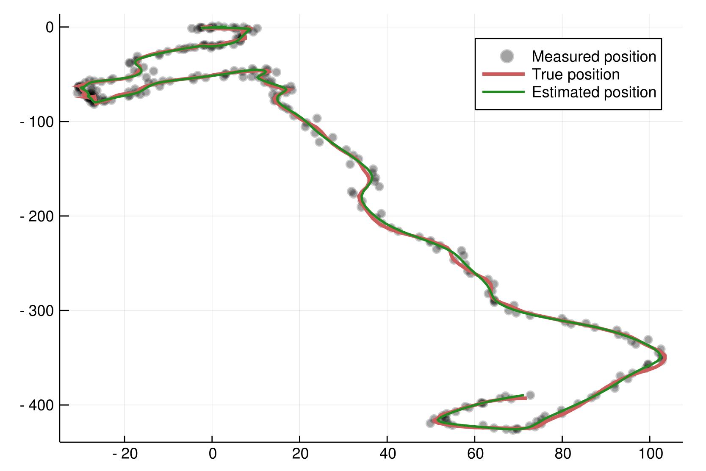

Examples
Air Passengers
Let's take the classical Air Passenger time series as an example. In order to avoid multiplicative effects, we use the well-known approach of taking the log of the series. The code is in the example folder.
using CSV, StateSpaceModels, Plots, Statistics, Dates
# Load the AirPassengers dataset
AP = CSV.read("AirPassengers.csv")
# Take the log of the series
logAP = log.(Vector{Float64}(AP[:Passengers]))
# Plot the data
p1 = plot(AP[:Date], logAP, label = "Log-airline passengers", legend = :topleft, color = :black)
First we need to specify a state-space model. In this case, we'll utilize the basic structural model.
# Create structural model with seasonality of 12 months
model = structural(logAP, 12)Estimating the model gives us the trend and seasonal components of the time series.
# Estimate a StateSpace structure
ss = statespace(model)
# Analyze its decomposition in trend and seasonal
p2 = plot(AP[:Date], [ss.smoother.alpha[:, 1] ss.smoother.alpha[:, 3]], layout = (2, 1),
label = ["Trend component" "Seasonal component"], legend = :topleft)We can also forecast this time series. In this example, we will forecast 24 months ahead.
# Forecast 24 months ahead
N = 24
pred, dist = forecast(ss, N)
# Define forecasting dates
firstdate = AP[:Date][end] + Month(1)
newdates = collect(firstdate:Month(1):firstdate + Month(N - 1))
p3 = plot!(p1, newdates, pred, label = "Forecast")Vehicle tracking
In order to illustrate one application that does not fall into any of the predefined models, thus requiring a user-defined model, let us consider an example from control theory. More precisely, we are going to use StateSpaceModels.jl to track a vehicle from noisy sensor data. In this case, $y_t$ is a $2 \times 1$ observation vector representing the corrupted measurements of the vehicle's position on the two-dimensional plane in instant $t$. Since sensors collect the observations with the presence of additive Gaussian noise, we need to filter the observation in order to obtain a better estimate of the vehicle's position. The full code to run this example is in the example folder.
The position and speed in each dimension compose the state of the vehicle. Let us refer to $x_t^{(d)}$ as the position on the axis $d$ and to $\dot{x}^{(d)}_t$ as the speed on the axis $d$ in instant $t$. Additionally, let $\eta^{(d)}_t$ be the input drive force on the axis $d$, which acts as state noise. For a single dimension, we can describe the vehicle dynamics as
where $\Delta_t$ is the time step and $\rho$ is a known damping effect on speed.
We can cast this dynamical system as a state-space model in the following manner:
where $\alpha_t = (x_t^{(1)}, \dot{x}^{(1)}_{t}, x_t^{(2)}, \dot{x}^{(2)}_{t})^{\top}$ and $\eta_t = (\eta^{(1)}_t, \eta^{(2)}_t)^{\top}$.
We can formulate the vehicle tracking problem in StateSpaceModels.jl as:
# State transition matrix
T = kron(Matrix{Float64}(I, p, p), [1 (1 - ρ * Δ / 2) * Δ; 0 (1 - ρ * Δ)])
# Input matrix
R = kron(Matrix{Float64}(I, p, p), [.5 * Δ^2; Δ])
# Output (measurement) matrix
Z = kron(Matrix{Float64}(I, p, p), [1 0])
# User defined model
model = StateSpaceModel(y, Z, T, R)
# Estimate vehicle speed and position
ss = statespace(model)In this example, we define the noise variances $H$ and $Q$, generate the noises and simulate a random vehicle trajectory using the state-space equations:
# Generate random actuators
Q = .5 * Matrix{Float64}(I, q, q)
η = MvNormal(Q)
# Generate random measurement noise
H = 2. * Matrix{Float64}(I, p, p)
ε = MvNormal(H)
# Simulate vehicle trajectory
α = zeros(n + 1, m)
y = zeros(n, p)
for t in 1:n
y[t, :] = Z * α[t, :] + rand(ε)
α[t + 1, :] = T * α[t, :] + R * rand(η)
endAn illustration of the results can be seen in the following figure. It can be seen that the measurements are reasonably noisy when compared to the true position. Furthermore, the estimated positions, represented by the smoothed state, effectively estimate the true positions with small inaccuracies.
